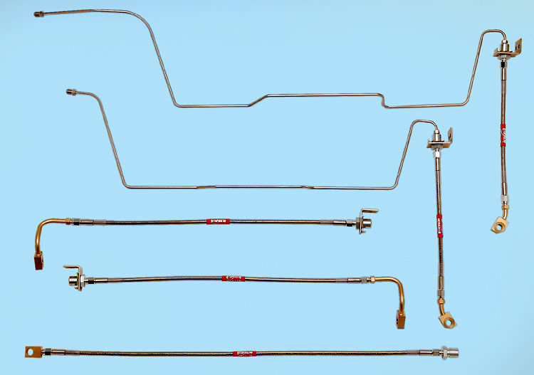

|
Stainless Brake Lines |
|
Stainless lines are overblown. They will help provide slightly better pedal feel and firmness, but that's about it. Keep your expectations reasonable.
That having been said, I would not consider any high performance vehicle to be complete without them. And they look cool.
There are basically two choices - DOT-approved and non-approved. The difference is that DOT-approved lines must have the fittings swaged on; screw-on (i.e., reusable) fittings are not street legal.
You can roll your own with -AN brake lines and fittings or use pre-made hoses from Russell Performance, or Allstar Performance, or the like. Roll-your-own are not DOT legal. I'm not sure about the "legality" of using fittings to adapt a pre-made hose.
There are several options in pre-made lines. For front-only kits, Goodridge lists part number 13065 for "97-98" F150s. It is also rumored that Stop-Tech makes a set of front lines for the F150.
A complete, pimp daddy 5-piece kit from StopFlex is pictured below. The fifth piece connects to the the hard lines in the rear.

I will post some photos when mine are installed.
Some notes on poor pedal feel from a post on F150 online:
From day one, my F150 has had a soft brake pedal. You pump it once and it�s solid as a rock! I took it in to my selling dealership and the service manager and I test drove a used 06 on the lot to see if it was just an 06 thing. I was really hoping that this used reference truck didn�t have the same issue as mine. Thankfully it didn�t (have the same soft pedal). The reference truck had a nice solid pedal. David informed me that he would �consult� with the engineers and get back to me. A week later he called and said that the engineers couldn�t really isolate any one component but offered a few suggestions. I dropped off the truck yesterday and they ran a diagnostic on my brake booster. It tested fine. They replaced the master cylinder and adjusted the actuator rod (located between the booster and MC). I picked it up tonight and PRESTO! Brakes feel just as they should. FIRM ON THE FIRST PRESS !!!!!! I know that there were a few here that have already had the MC replaced and still have the soft pedal. I can say from experience that if the MC and brake booster have already been replaced, it more than likely is the actuator rod. I installed a Wilwood aluminum race MC in my mustang and had to adjust the actuator rod several times before it felt right. Adjust it too far out and the brakes are actually engaged before ever touching the pedal. Adjust it too far in and the pedal feels very soft, like air in the lines. One could easily make this adjustment in their garage, but why bother if it�s under warranty. A later post explained: The rod is located between the MC and the booster; therefore you must pull the MC forward. You don�t have to disconnect any lines unless they prevent the MC from moving far enough forward. The Rod has a ball on the MC end that you would turn with a wrench. Once the correct length has been determined, cinch down the locking nut. Another reader reported:
WOW all I can say is
HOLY CRAP!!!!!!!!!!
|